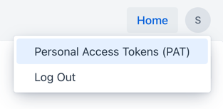
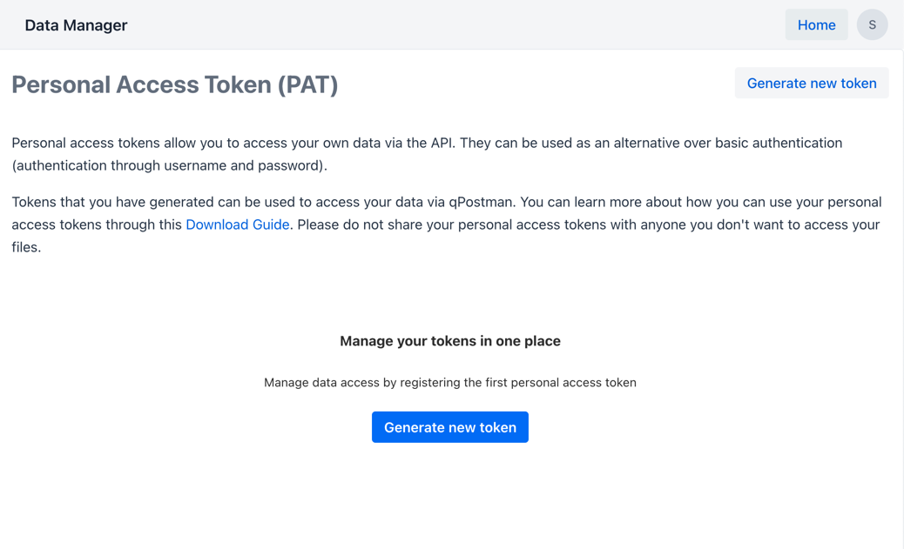
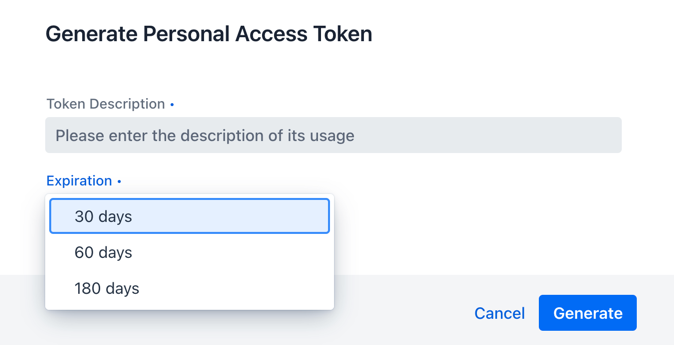

Personal access token
Before you can begin with downloading any data via HTTPS, you need to tell the download server who you are. We enforce a token-based authentication (personal access token: PAT) so you are not required to expose you password with anyone or with any system.
Tip
You can create as many tokens as you like, however consider them as a secret.
Generate a token
First of all, navigate to your PAT overview page in your profile overview (top-right corner)

You should now be able to see the PAT token overview page:

Personal access tokens have a life-time, which can be set based on your requirements. Your token expires automatically, there is nothing you have to do manually.

Token visibility
A generated token will be only visible in its raw notation once! Make sure to store it safely in your local password manager, you will not be able to access the token value again.
Manage tokens
You can see your created tokens in the overview, however since they are instantly encrypted after generation, you cannot access their raw value anymore. We encourage you to use meaningful descriptions for your tokens, so you remember for what purpose you have created them.

Warning
If you are unsure that your PAT got exposed or shared with untrusted parties, delete them right away.